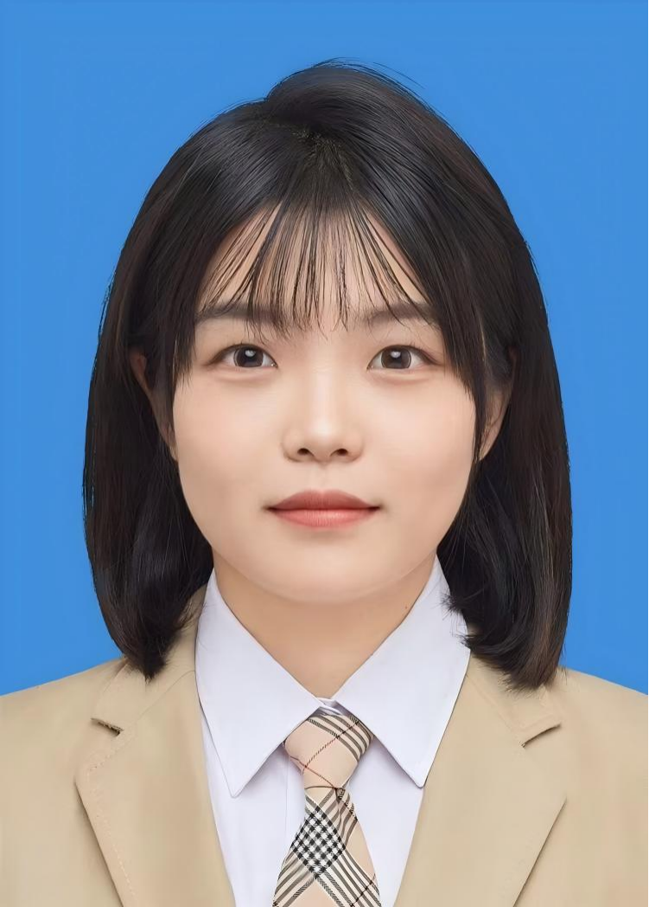

首页
首页
南宁市口腔医院朝阳院区介绍
医院介绍：南宁市口腔医疗中心(南宁市口腔医院)成立于1993年，是集医疗、教学、科研为一体的医疗机构，是南宁市城镇职工医疗保险定点医疗机构、区直医疗保险定点医疗机构。是南宁市卫生健康委的直属医疗卫生单位，南宁市级公立口腔专科医疗机构，南宁市教育局“双师型”教师培训基地，南宁市首批区、市医保定点医疗机构。“南宁市口腔医院建设项目”2024年成功获批国家公立医高质量发展示范项目子项目，目前共设两个院区——朝阳院区和滨湖院区,实行“一院两区”同质化管理,开设各类口腔专科门诊科室，配备放射科、消毒供应室、手术室等医技科室,开设口腔颌面外科住院部，配备现代化检查、检验和治疗设备,诊疗总面积约7500平方米，共设口腔综合治疗椅100余张，住院病床10余张。现有医护团队70余人，其中高级职称16人，中级职称25人,研究生以上学历12人。
预约电话：0771-2621997
地址：南宁市兴宁区新华路5号卫生大厦2楼(地铁一号线朝阳广场站D出口)
我们的医生
杨 虹
医师 中华口腔医学会会员
毕业于南方医科大学口腔医学专业，本科学历，曾在广西医科大学附属口腔医院完成口腔内科规范化培训。擅长儿童口腔健康管理与预防，成人及儿童的龋病、牙髓病、根尖周病、牙外伤的综合治疗，简单牙拔除等。
曹扬扬
医师
毕业于湖南长沙医学院口腔医学专业，本科学历。擅长乳牙恒牙拔除、龋齿充填修复、牙体牙髓及根尖周病、牙周疾病等常见口腔内外科疾病的诊治。
何国泉
中共党员
毕业于桂林医科大学口腔医学专业，完成广西壮族自治区人民医院口腔颌面外科住院医师规范化培训。熟练掌握口腔临床常见疾病的诊断 与治疗，擅长牙体牙髓、根尖周病、牙周病的诊疗，各类阻生牙微创拔除、颌面部外伤、牙外伤及领面部感染的处理等，常见牙体缺损、牙列缺损的美学、固定、活动设计及修复。
黄建湖
副主任医师 广西医学会显微外科学分会委员 广西口腔医学会口腔颌面外科专业委员会委员
毕业于右江民族医学院口腔医学系，本科学历，曾在上海市第九人民医院进修口腔颌面头颈肿瘤专业，以及在深圳市口腔医院修复种植中心进修学习；从事临床工作近20年，擅长口腔颌面外科和口腔种植领域的多种技术，如口腔颌面头颈肿瘤根治术、血管化游离皮瓣的转移修复、口腔种植修复等。
黄麟茵
医师 中共党员 中华口腔医学会口腔修复专委会及口腔激光医学专委会会员
毕业于桂林医科大学口腔医学专业，硕士研究生，曾在桂林医科大学完成口腔全科规范化培训。擅长牙周炎患者的牙周-种植修复联合治疗，各类固定义齿、活动义齿、前牙美学修复及龋病、根尖周病的多学科联合治疗。
黄文晔
副主任医师 中共党员 南宁市“百名优秀医师”
毕业于右江民族医学院口腔医学系，研究生学历，曾于上海交通大学医学院附属第九人民医院进修学习；从事临床工作10余年，熟悉各种错颌畸形复杂病例的诊断及治疗，青少年错颌的早期干预及成人错颌的多学科联合治疗，擅长各类固定矫治技术及无托槽隐形矫治技术。
蓝曼珊
医师 中共党员
毕业于广西中医药大学口腔医学专业，曾于广西医科大学附属口腔医院进修。曾在三甲医院从事口腔临床工作数年。擅长牙体缺损、龋病的微创美学修复，如嵌体、贴面、全冠、前牙美学树脂充填修复术;擅长牙列缺损及缺失的固定修复及活动义齿修复；显微镜下疑难根管、根尖疾病、儿童牙体牙髓疾病的综合治疗，各类复杂牙阻生牙的拔除，牙周疾病的序列治疗。
李翠婷
副主任医师 广西医学会口腔正畸专业委员会青年委员 中华口腔医学会会员
毕业于右江民族医学院口腔医学系，本科学历，曾在四川大学华西口腔医学院正畸科进修学习；从事临床工作近20年，擅长青少年及成人的各类错颌畸形的治疗，尤其擅长牙列拥挤、双颌前突、反合等疾病的诊治。在数字化透明牙套隐形矫治、儿童早期矫治、正颌正畸联合治疗中的术前术后正畸治疗方面、龋病修补及治疗亦有丰富的临床经验。
梁翛衍
医师 中共党员 中华口腔医学会会员 中华口腔医学会舒适化治疗认证医师
毕业于广西医科大学口腔医学专业，研究生学历；专业擅长： ■ 舒适化治疗：笑气镇静/STA无痛注射技术 ■ 牙槽外科手术：复杂阻生牙微创拔除、骨增量技术 ■ 前牙美学修复：DSD数字化微笑设计 ■ 儿童舒适化诊疗：行为诱导+无痛技术，龋病/牙髓病一站式干预 ■ 外科并发症处理：干槽症防治、术后加速康复技术
刘 桑
副主任医师 中华口腔医学会牙周专业委员
毕业于广西医科大学口腔医学院口腔医学专业，研究生学历，擅长各类龋病、牙髓病、儿童牙病、牙周病的治疗及各类复杂牙的拔除；显微镜下的疑难根管治疗；在龋病的微创美学、根管治疗、儿童牙病和牙周系统治疗方面具有丰富的临床经验。
刘珊妤
医师 中华口腔医学会会员
毕业于广西中医药大学口腔医学专业，本科学历，曾在广西医科大学附属口腔医院正畸进修。擅长各类复杂牙、阻生牙的微创拔除，熟悉各项牙体牙髓病，牙体缺损各类修复，擅长错合畸形复杂病例诊断及治疗，各类固定矫治及隐形矫治技术。
唐艳玲
医师 中共党员 中华口腔医学会会员
毕业于广西中医学院口腔医学专业，大学本科学历，从事口腔临床工作十五余年，曾于四川大学华西口腔医院修复科进修学习，擅长口腔疾病的诊断和各类固定及活动义齿的设计与修复，在美学及微创修复（瓷贴面、瓷嵌体）方面有独特的见解。
韦叶子
医师
毕业于广西医科大学口腔医学院口腔医学专业，本科学历，完成广西壮族自治区人民医院规范化培训。对口腔各类常见病、多发病能熟练诊治，擅长各类龋病、牙髓病、根尖周疾病的诊断和治疗、牙齿美白、前牙美容树脂修复、各种复杂牙拔除、颌面部外伤清创缝合及各类牙体缺损修复等治疗。
徐文强
副主任医师 中共党员 中国口腔医学技术分委会委员
毕业于广西医科大学口腔医学系，研究生学历，曾获南宁市卫生系统优秀共产党员、先锋示范医疗卫生标兵、南宁市先锋示范岗等荣誉称号。从事口腔修复临床工作二十余年，擅长各类牙体缺损、牙列缺损、缺失的诊断和治疗。对前牙及微创(瓷贴面、瓷嵌体)美学修复、种植牙修复、咬合重建、复杂病例修复设计治疗有丰富的临床经验。

薛 睿
医师 中共党员
毕业于广西医科大学口腔医学院口腔颌面外科专业，硕士学位，研究生学历。于广西医科大学附属口腔医院完成住院医师规范化培训。擅长各类复杂牙、阻生牙的微创拔除，面部外伤美容缝合，根尖囊肿开窗及刮治术等。在各类牙体牙髓、牙周疾病的诊断及治疗中积累了丰富的临床经验。
钟佩纯
医师 中共党员
毕业于广西医科大学口腔医学专业，本科学历，在广西医科大学附属口腔医院正畸科规培；熟悉各种错颌畸形复杂病例的诊断及治疗，青少年错颌的早期干预及成人错颌畸形治疗，擅长各类固定矫治技术及无托槽隐形矫治技术，龋病、牙髓病、根尖周疾病、牙周疾病的诊断和治疗以及牙齿美白、前牙美学树脂修复等。
预约